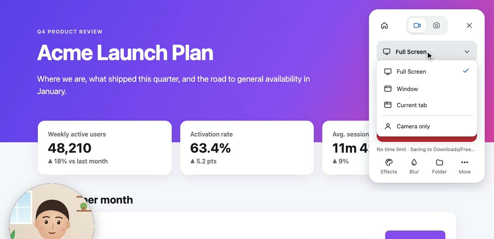
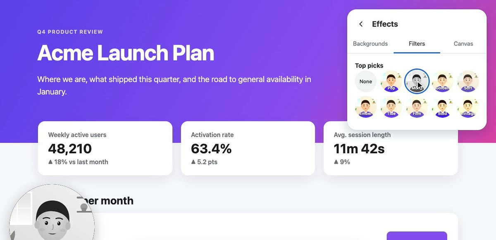

Records a screen, window or tab
Pick Full Screen, Window or Current tab. Current tab starts with no picker when you open FreeRec from its icon.

Record a screen, a window or one tab with your webcam in a round bubble. Each video streams into a folder you pick, with no account and no upload.
Version 1.1.0 for Chrome 116 or newer, MIT licence.
Finish a recording and My recordings opens with the new video playing. Rename, delete or point FreeRec at another folder from the same window.
Download the demo videoFreeRec makes no network requests. The code, the WASM runtime and the segmentation model ship inside the extension, and each video is written only to the folder you chose.
0
network requests made by the extension
4
capture modes, camera only included
10
colour filters for the webcam bubble
6
canvas templates to present on
Pick Full Screen, Window or Current tab. Current tab starts with no picker when you open FreeRec from its icon.

Blur, five scenes, 11 colours or your own image, plus 10 filters. The person model runs on your device.

Drag a rectangle or capture the whole tab as a PNG. FreeRec hides its own controls before the shot.

Meeting, Standup, News and three more, plus six text layouts. Each moves your camera bubble into its slot.

Yes. It is open source under the MIT licence, with no plan and no watermark.
Into a folder you choose once, written as you record. Until then, into Downloads/FreeRec.
No. It makes no network requests and has no account.
WebM with a seekable duration, or MP4 where your Chrome supports it.
Yes. Tick Share audio in Chrome's dialog and it is mixed with your microphone.
Chrome 116 or newer. Edge, Brave and Arc should work but are not tested.
FreeRec is not on the Chrome Web Store yet, so it loads as an unpacked extension.
Get the zip from the latest GitHub release and unzip it where it can stay.
In chrome://extensions turn on Developer mode, then Load unpacked the folder.
The panel opens on the page you are on, ready to record.